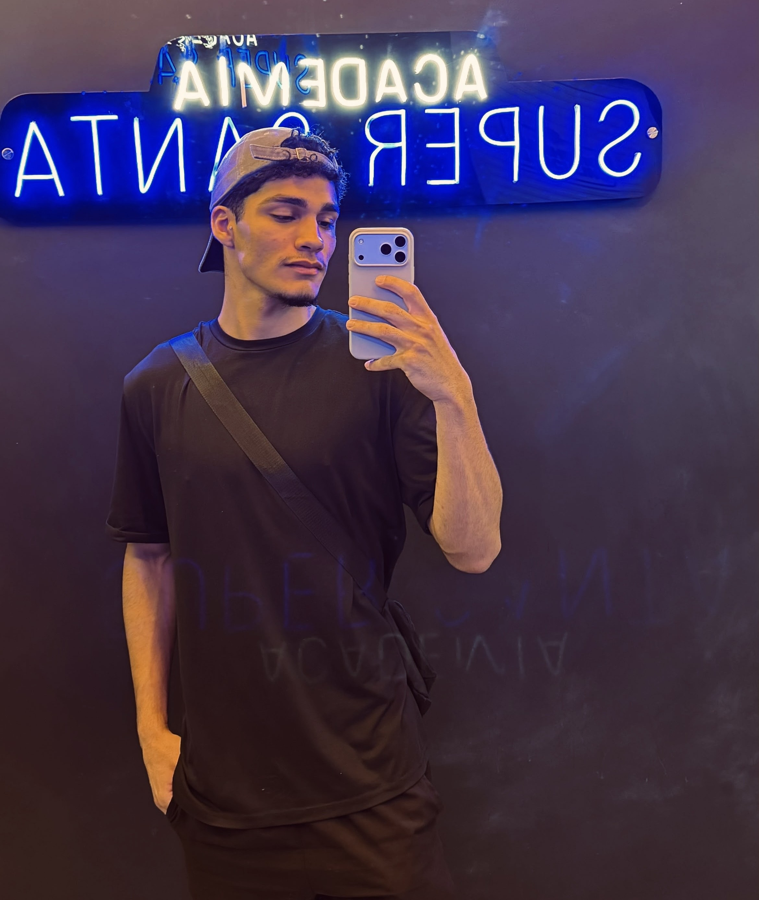

Meu nome é Gabriel Dias, tenho 19 anos e sou estudante do curso de Análise e Desenvolvimento de Sistemas no IFCE – Campus Boa Viagem. Sou uma pessoa dedicada e esforçada, com grande interesse pela área de tecnologia.
Minha trajetória começou durante o curso técnico integrado ao Ensino Médio em Redes de Computadores, também realizado no IFCE, onde desenvolvi ainda mais minha afinidade com a área.
Atualmente, estou no primeiro semestre de Análise e Desenvolvimento de Sistemas, buscando ampliar meus conhecimentos e desenvolver novas habilidades no mundo da programação.
Este portfólio tem como objetivo apresentar um pouco sobre mim, minha trajetória acadêmica, meus conhecimentos e minha evolução na área de tecnologia.
Estou sempre disposto a aprender, enfrentar novos desafios e aproveitar oportunidades que contribuam para meu crescimento pessoal e profissional.